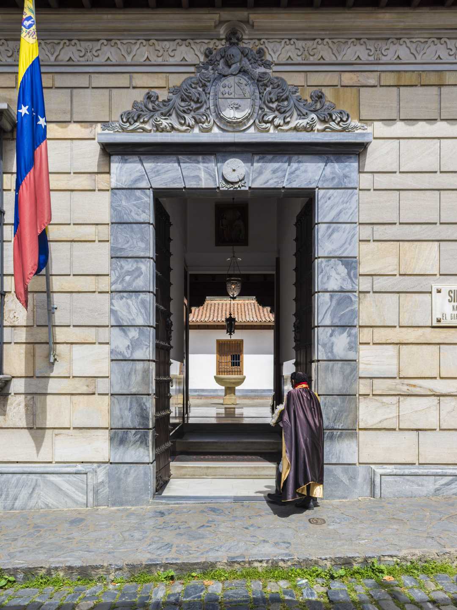

Sitios Historicos
Son lugares que tienen un valor histórico, cultural y arqueológico significativo y están relacionados con eventos, hechos y personajes importantes del pasado. Estos sitios incluyen monumentos, edificios, plazas, museos, estatuas, ruinas y otros lugares que tienen una importancia histórica y cultural y que pueden ser visitados por el público en general. Son testimonios tangibles de la historia de una sociedad y se consideran patrimonio cultural de la humanidad. Los sitios históricos son importantes para conservar la memoria colectiva, fomentar el turismo cultural, promover la educación y enriquecer la cultura y el conocimiento.
No se limitan solo a lugares físicos, también pueden incluir eventos o situaciones que han tenido un impacto significativo en la historia y la cultura de una sociedad. Estos lugares son a menudo visitados por turistas y estudiosos interesados en comprender aspectos históricos y culturales de una región o un país. Los sitios históricos pueden mostrar diferentes momentos de la historia, desde la prehistoria hasta nuestra época actual y pueden ser tanto civiles, militares, religiosos y políticos. Es común que estos sitios sean preservados y restaurados para mantener su autenticidad y valor histórico. Al visitar un sitio histórico se puede obtener una comprensión más profunda de una cultura o evento histórico, y así poder aprender y preservar su legado para generaciones futuras.
